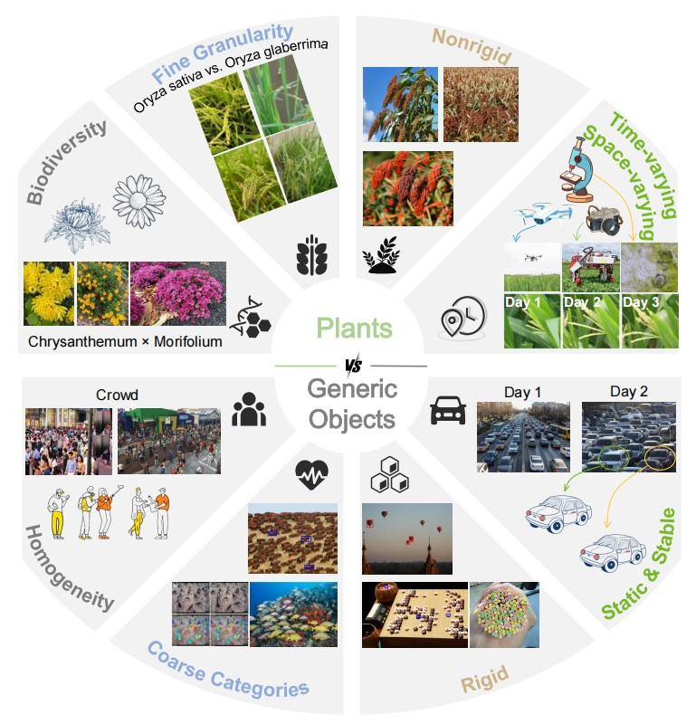
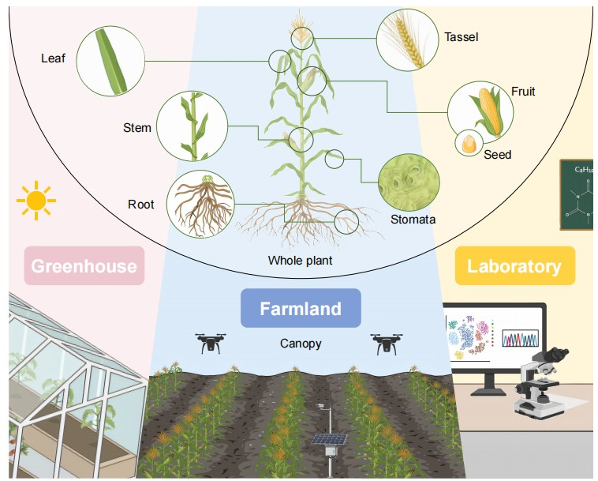
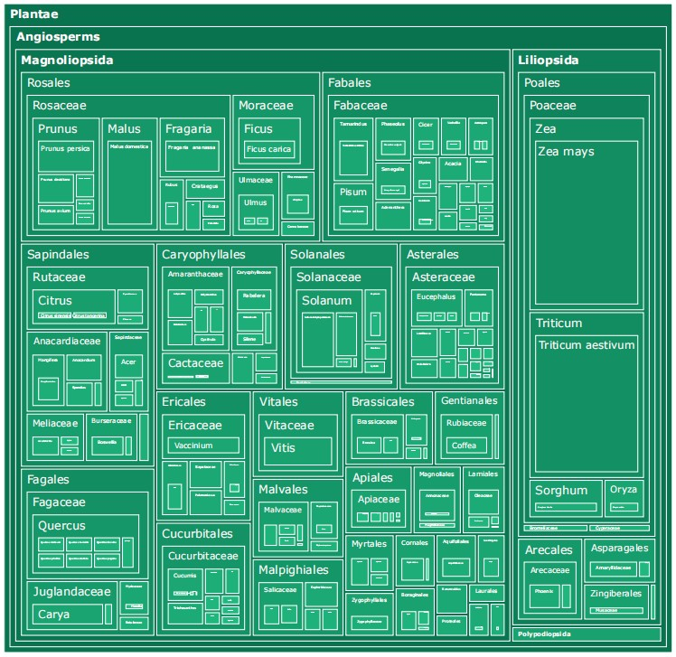
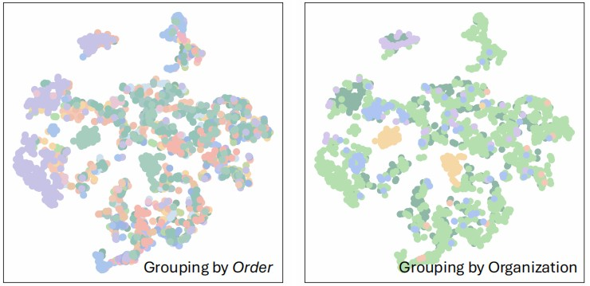
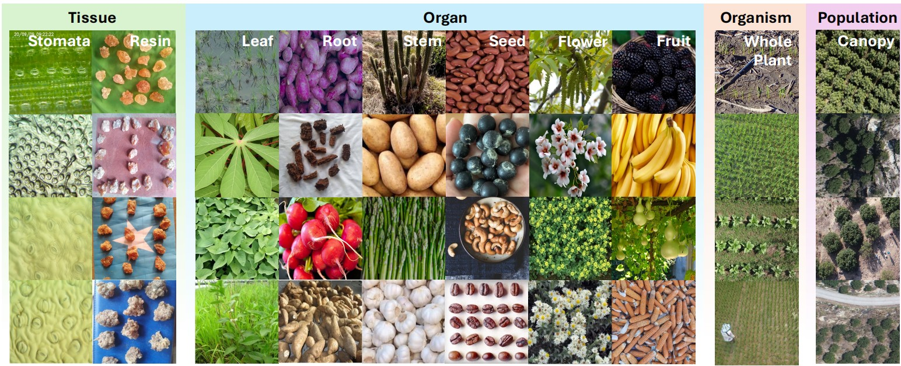
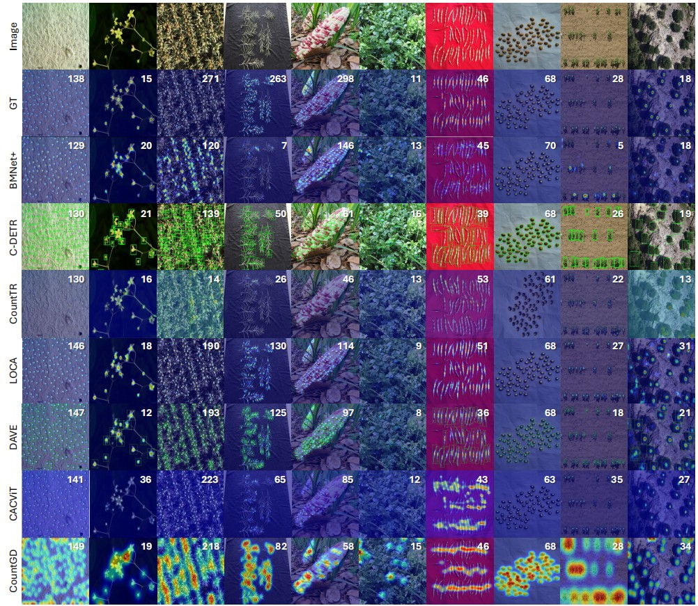

Abstract
Visually cataloging and quantifying the natural world requires pushing the boundaries of both detailed visual classification and counting at scale. Despite significant progress, particularly in crowd and traffic analysis, the fine-grained, taxonomy-aware plant counting remains underexplored in vision. In contrast to crowds, plants exhibit nonrigid morphologies and physical appearance variations across growth stages and environments.
To fill this gap, we present TPC-268, the first plant counting benchmark incorporating plant taxonomy. Our dataset couples instance-level point annotations with Linnaean labels (kingdom to species) and organ categories, enabling hierarchical reasoning and species-aware evaluation. The dataset features 10,000 images with 678,050 point annotations, includes 268 countable plant categories over 242 plant species in Plantae and Fungi, and spans observation scales from canopy-level remote sensing imagery to tissue-level microscopy.
We follow the problem setting of class-agnostic counting (CAC), provide taxonomy-consistent, scale-aware data splits, and benchmark state-of-the-art regression- and detection-based CAC approaches. By capturing the biodiversity, hierarchical structure, and multi-scale nature of botanical and mycological taxa, TPC-268 provides a biologically grounded testbed to advance fine-grained class-agnostic counting.

Biodiversity and morphological variations in plants versus generic objects.

Plant categories across four biological levels and scales from microscopy to UAV imagery.

Taxonomic hierarchy treemap of the species and genera in TPC-268.
Experimental Results
1. Performance on TPC-268
Regression-based paradigms consistently outperform detection-based methods, as explicit object localization is severely hindered by the compact spatial arrangement and structural entanglement of plant organs. LOCA achieves the best test performance by effectively integrating local structural cues. In contrast, models relying primarily on global self-attention (e.g., CACViT, TasselNetV4) show strong validation results but exhibit significant generalization gaps on unseen test scenes, indicating a tendency to overfit validation distributions.
Table 2a: 3-Shot Setting
| Method | Venue | Backbone | Validation | Test | ||||
|---|---|---|---|---|---|---|---|---|
| MAE ↓ | RMSE ↓ | R² ↑ | MAE ↓ | RMSE ↓ | R² ↑ | |||
| FamNet | CVPR'21 | R50 | 28.87 | 52.51 | 0.58 | 30.43 | 65.62 | 0.62 |
| BMNet+ | CVPR'22 | R50 | 29.33 | 77.78 | 0.47 | 27.78 | 57.25 | 0.50 |
| C-DETR | ECCV'22 | R50 | 22.66 | 77.51 | 0.75 | 22.68 | 57.97 | 0.74 |
| SPDCNet | BMVC'22 | R18 | 25.66 | 72.49 | 0.52 | 23.70 | 47.53 | 0.64 |
| CountTR | BMVC'22 | Hybrid | 20.21 | 55.82 | 0.73 | 25.19 | 49.94 | 0.62 |
| SAFECount | WACV'23 | R18 | 22.57 | 63.65 | 0.64 | 25.70 | 52.30 | 0.58 |
| LOCA | ICCV'23 | R50 | 17.26 | 53.19 | 0.75 | 17.51 | 38.37 | 0.78 |
| DAVE | CVPR'24 | R50 | 16.47 | 52.87 | 0.76 | 17.61 | 40.06 | 0.75 |
| CACVIT | AAAI'24 | ViT-B | 16.63 | 42.49 | 0.82 | 22.04 | 41.79 | 0.73 |
| CountGD | NeurIPS'24 | Swin-B | 18.32 | 54.55 | 0.74 | 19.52 | 50.51 | 0.61 |
| TasselNetV4 | ISPRS'26 | ViT-B | 13.20 | 43.93 | 0.83 | 22.95 | 51.36 | 0.60 |
Table 2b: 1-Shot Setting
| Method | Venue | Backbone | Validation | Test | ||||
|---|---|---|---|---|---|---|---|---|
| MAE ↓ | RMSE ↓ | R² ↑ | MAE ↓ | RMSE ↓ | R² ↑ | |||
| FamNet | CVPR'21 | R50 | 33.11±0.68 | 68.95±4.15 | 0.58±0.05 | 33.63±1.13 | 62.07±2.94 | 0.41±0.05 |
| BMNet+ | CVPR'22 | R50 | 29.33±0.13 | 77.50±0.31 | 0.48±0.05 | 27.84±0.10 | 56.98±0.12 | 0.50±0.01 |
| CountTR | BMVC'22 | Hybrid | 20.16±0.05 | 55.15±0.82 | 0.73±0.01 | 25.19±0.14 | 50.23±0.24 | 0.62±0.00 |
| LOCA | ICCV'23 | R50 | 17.19±0.31 | 48.14±2.19 | 0.80±0.02 | 21.47±0.29 | 42.36±0.72 | 0.73±0.01 |
| DAVE | CVPR'24 | R50 | 16.06±0.60 | 48.35±1.19 | 0.80±0.01 | 19.47±0.44 | 42.54±0.35 | 0.72±0.00 |
| CACVIT | AAAI'24 | ViT-B | 17.96±0.16 | 43.38±0.47 | 0.83±0.00 | 22.06±0.11 | 42.97±0.81 | 0.71±0.01 |
| TasselNetV4 | ISPRS'26 | ViT-B | 13.49±0.02 | 41.30±0.46 | 0.85±0.00 | 22.20±0.11 | 48.70±0.26 | 0.67±0.00 |
2. Cross-Dataset Transfer Analysis
Generic models trained on FSC-147 suffer severe performance degradation on TPC-268 (MAE increases up to 225%). Conversely, models trained on plant data transfer more robustly to generic scenes, indicating that plant counting presents a more challenging representation problem due to morphological complexity.
| Method | FSC-147 → TPC-268 | TPC-268 → FSC-147 | ||
|---|---|---|---|---|
| MAE | Δ vs Same-Domain | MAE | Δ vs Same-Domain | |
| CountTR | 38.62 | +225% | 26.53 | +5% |
| CACVIT | 26.73 | +147% | 17.88 | -19% |
| LOCA | 24.70 | +130% | 15.16 | -13% |
3. Zero-Shot and Foundation Models
Current zero-shot methods (GroundingREC) and vision-language backbones (BioCLIP2) underperform relative to visual-exemplar methods. The low-resolution feature maps of ViT architectures, without specific adapter designs, are suboptimal for dense prediction, suggesting that explicit modeling of visual similarity remains more effective than text-only or off-the-shelf foundation features.
| Method / Paradigm | Test MAE | Test R² |
|---|---|---|
| LOCA (3-Shot Visual) | 17.51 | 0.78 |
| GroundingREC (Zero-Shot Text) | 24.14 | 0.53 |
| LOCA + BioCLIP2 Backbone | 34.75 | 0.29 |
4. Taxonomic Knowledge as Inductive Bias
Incorporating Linnaean taxonomy as textual prompts yields consistent error reduction (e.g., MAE drops from 19.52 to 16.90). This confirms that structured biological knowledge provides a practical and effective inductive bias for fine-grained counting tasks.
| Target Specification | MAE ↓ | RMSE ↓ | R² ↑ |
|---|---|---|---|
| 3 visual exemplars | 19.52 | 50.51 | 0.61 |
| + species name | 17.53 | 44.80 | 0.69 |
| + full taxonomy | 16.90 | 43.32 | 0.71 |

t-SNE visualization. It highlights that visual features alone struggle to cluster deep biological taxa.
TPC-268 Showcase

TPC-268 diversity across scales. Multi-scale morphologies from microscopic tissues to canopy-level remote sensing.

Qualitative results on TPC-268. Predicted counting results from representative methods across diverse scenarios.
BibTeX
@article{xu2026plant,
title={Plant Taxonomy Meets Plant Counting: A Fine-Grained, Taxonomic Dataset for Counting Hundreds of Plant Species},
author={Xu, Jinyu and Hu, Tianqi and Hu, Xiaonan and Zhou, Letian and Cao, Songliang and Zhang, Meng and Lu, Hao},
journal={arXiv preprint arXiv:2603.21229},
year={2026}
}